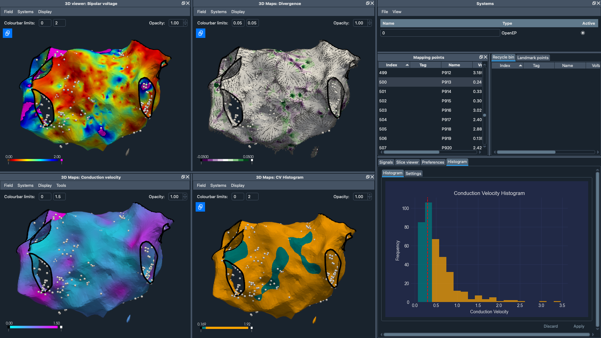

tinkering around
< |
EP Workbench
June 2024 | Guiding Clinical Decision Making for Cardiac Arrhythmias
Resources
About the project
EP Workbench is a Graphical interface to our open-source library OpenEP, allowing you to go beyond
code-based analysis to a fully UI-based interactive experience.
This technology started at Dr Steven Williams research team at The University of Edinburgh. Steven and I are now spinning out as a company called CardioWave, with EP Workbench at the core (plus some secret sauce).
Here are some of the features of EP Workbench:
This technology started at Dr Steven Williams research team at The University of Edinburgh. Steven and I are now spinning out as a company called CardioWave, with EP Workbench at the core (plus some secret sauce).
Here are some of the features of EP Workbench:
- Load your data from OpenEP, openCARP, CVI42 and vtk.
- Visualise voltage, LAT, conduction velocity, etc. interpolated on your 3D model..
- Analyse and re-annotate signal data.
- Export your data for further analysis as OpenEP standard, openCARP or CSV.
- Use our histogram analysis tool to provide quantitative analysis of mapping data directly within the user interface.
- … and a handful of additional tools, including mesh editor, region selection, combining mesh data etc.
A glimpse into EP Workbench

Submissions
As part of this project I have submitted abstracts to various conferences including EHRA 24, BHRS 24 and ARCHER2 (UK's National Supercomputing Services). This research was conducted under the supervision of Dr Steven Williams and Dr Ali Gharaviri.